소방설비기사(전기분야) (2019-09-21 기출문제)
1과목: 소방원론
1. 방화벽의 구조 기준 중 다음 ( ) 안에 알맞은 것은?
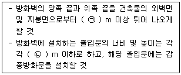
- ㉠ 0.3, ㉡ 2.5
- ㉠ 0.3, ㉡ 3.0
- ㉠ 0.5, ㉡ 2.5
- ㉠ 0.5, ㉡ 3.0
(정답률: 80%)

2. 물의 소화력을 증대시키기 위하여 첨가하는 첨가제 중 물의 유실을 방지하고 건물, 임야 등의 입체 면에 오랫동안 잔류하게 하기 위한 것은?
- 증점제
- 강화액
- 침투제
- 유화제
(정답률: 76%)
3. BLEVE 현상을 설명한 것으로 가장 옳은 것은?
- 물이 뜨거운 기름표면 아래에서 끓을 때 화재를 수반하지 않고 over flow 되는 현상
- 물이 연소유의 뜨거운 표면에 들어갈 때 발생되는 over flow 현상
- 탱크 바닥에 물과 기름의 에멀젼이 섞여있을 때 물의 비등으로 인하여 급격하게 over flow 되는 현상
- 탱크 주위 화재로 탱크 내 인화성 액체가 비등하고 가스부분의 압력이 상승하여 탱크가 파괴되고 폭발을 일으키는 현상
(정답률: 80%)
4. 소화원리에 대한 설명으로 틀린 것은?
- 냉각소화 : 물의 증발잠열에 의해서 가연물의 온도를 저하시키는 소화방법
- 제거소화 : 가연성 가스의 분출화재 시 연료공급을 차단시키는 소화방법
- 질식소화 : 포소화약제 또는 불연성가스를 이용해서 공기 중의 산소공급을 차단하여 소화하는 방법
- 억제소화 : 불활성기체를 방출하여 연소범위 이하로 낮추어 소화하는 방법
(정답률: 76%)
5. 화재강도(Fire Intensity)와 관계가 없는 것은?
- 가연물의 비표면적
- 발화원의 온도
- 화재실의 구조
- 가연물의 발열량
(정답률: 66%)
6. 다음 중 인화점이 가장 낮은 물질은?
- 산화프로필렌
- 이황화탄소
- 메틸알코올
- 등유
(정답률: 53%)
7. 에테르, 케톤, 에스테르, 알데히드, 카르복실산, 아민 등과 같은 가연성인 수용성 용매에 유효한 포소화약제는?
- 단백포
- 수성막포
- 불화단백포
- 내알코올포
(정답률: 69%)
8. 할로겐화합물 청정소화약제는 일반적으로 열을 받으면 할로겐족이 분해되어 가연 물질의 연소 과정에서 발생하는 활성종과 화합하여 연소의 연쇄반응을 차단한다. 연쇄반응의 차단과 가장 거리가 먼 소화약제는?
- FC-3-1-10
- HFC-125
- IG-541
- FIC-13I1
(정답률: 73%)
9. 화재발생 시 인명피해 방지를 위한 건물로 적합한 것은?
- 피난설비가 없는 건물
- 특별피난계단의 구조로 된 건물
- 피난기구가 관리되고 있지 않은 건물
- 피난구 폐쇄 및 피난구유도등이 미비되어 있는 건물
(정답률: 90%)
10. 특정소방대상물(소방안전관리대상물은 제외)의 관계인과 소방안전관리대상물의 소방안전관리자의 업무가 아닌 것은?
- 화기 취급의 감독
- 자체소방대의 운용
- 소방 관련 시설의 유지·관리
- 피난시설, 방화구획 및 방화시설의 유지·관리
(정답률: 75%)
11. CF3Br 소화약제의 명칭을 옳게 나타낸 것은?
- 하론 1011
- 하론 1211
- 하론 1301
- 하론 2402
(정답률: 88%)
12. 화재의 유형별 특성에 관한 설명으로 옳은 것은?
- A급 화재는 무색으로 표시하며, 감전의 위험이 있으므로 주수소화를 엄금한다.
- B급 화재는 황색으로 표시하며, 질식소화를 통해 화재를 진압한다.
- C급 화재는 백색으로 표시하며, 가연성이 강한 금속의 화재이다.
- D급 화재는 청색으로 표시하며, 연소 후에 재를 남긴다.
(정답률: 83%)
13. 다음 중 전산실, 통신 기기실 등에서의 소화에 가장 적합한 것은?
- 스프링클러설비
- 옥내소화전설비
- 분말소화설비
- 할로겐화합물 및 불활성기체 소화설비
(정답률: 81%)
14. 프로판가스의 연소범위(vol%)에 가장 가까운 것은?
- 9.8 ~ 28.4
- 2.5 ~ 81
- 4.0 ~ 75
- 2.1 ~ 9.5
(정답률: 60%)
15. 가연물의 제거와 가장 관련이 없는 소화방법은?
- 유류화재 시 유류공급 밸브를 잠근다.
- 산불화재 시 나무를 잘라 없앤다.
- 팽창 진주암을 사용하여 진화한다.
- 가스화재 시 중간밸브를 잠근다.
(정답률: 89%)
16. 화재 시 이산화탄소를 방출하여 산소농도를 13vol%로 낮추어 소화하기 위한 공기 중 이산화탄소의 농도는 약 몇 vol%인가?
- 9.5
- 25.8
- 38.1
- 61.5
(정답률: 81%)
17. 독성이 매우 높은 가스로서 석유제품, 유지(油脂) 등이 연소할 때 생성되는 알데히드 계통의 가스는?
- 시안화수소
- 암모니아
- 포스겐
- 아크롤레인
(정답률: 53%)
18. 다음 중 인명구조 기구에 속하지 않는 것은?
- 방열복
- 공기안전매트
- 공기호흡기
- 인공소생기
(정답률: 66%)
19. 불포화 섬유지나 석탄에 자연발화를 일으키는 원인은?
- 분해열
- 산화열
- 발효열
- 중합열
(정답률: 78%)
20. 화재의 지속시간 및 온도에 따라 목재건물과 내화건물을 비교했을 때, 목재건물의 화재성상으로 가장 적합한 것은?
- 저온장기형이다.
- 저온단기형이다.
- 고온장기형이다.
- 고온단기형이다.
(정답률: 88%)
2과목: 소방전기회로
21. 변압기의 임피던스 전압을 구하기 위하여 행하는 시험은?
- 단락시험
- 유도저항시험
- 무부하 통전시험
- 무극성시험
(정답률: 66%)
22. 50F의 콘덴서 2개를 직렬로 연결하면 합성 정전용량은 몇 F인가?
- 25
- 50
- 100
- 1000
(정답률: 66%)
23. 다음과 같은 블록선도의 전체 전달함수는?
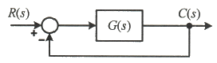
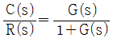
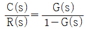
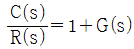
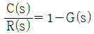
(정답률: 76%)
24. 변압기의 내부 보호에 사용되는 계전기는?
- 비율 차동 계전기
- 부족 전압 계전기
- 역전류 계전기
- 온도 계전기
(정답률: 77%)
25. 제어요소의 구성으로 옳은 것은?
- 조절부와 조작부
- 비교부와 검출부
- 설정부와 검출부
- 설정부와 비교부
(정답률: 84%)
26. SCR(silicon-controlled rectifier)에 대한 설명으로 틀린 것은?
- PNPN 소자이다.
- 스위칭 반도체 소자이다.
- 양방향 사이리스터이다.
- 교류의 전력제어용으로 사용된다.
(정답률: 72%)
27. 배선의 절연저항은 어떤 측정기를 사용하여 측정하는가?
- 전압계
- 전류계
- 메거
- 서미스터
(정답률: 83%)
28. 다음 논리식 중 틀린 것은?
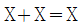
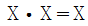
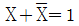
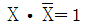
(정답률: 70%)
29. 논리식 X·(X+Y)를 간략화하면?
- X
- Y
- X+Y
- X·Y
(정답률: 66%)
30. 상순이 a, b, c인 경우 Va, Vb, Vc 를 3상 불평형 전압이라 하면 정상분 전압은? (단, α = ej2π/3 = 1∠120°)
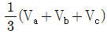
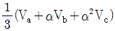
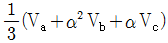
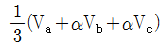
(정답률: 59%)
31. 가동철편형 계기의 구조 형태가 아닌 것은?
- 흡인형
- 회전자장형
- 반발형
- 반발흡인형
(정답률: 69%)
32. 어떤 회로에 v(t) = 150sinωt(V) 의 전압을 가하니 i(t) = 6sin(ωt-30°)(A) 의 전류가 흘렀다. 이 회로의 소비전력(유효전력)은 약 몇 W 인가?
- 390
- 450
- 780
- 900
(정답률: 37%)
33. 1 W·s와 같은 것은?
- 1 J
- 1 kg·m
- 1 kWh
- 860 kcal
(정답률: 77%)
34. 반파 정류회로를 통해 정현파를 정류하여 얻은 반파정류파의 최대값이 1일 때, 실효값과 평균값은?
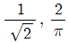
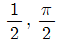
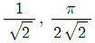
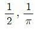
(정답률: 58%)
35. 수신기에 내장된 축전지의 용량이 6Ah인 경우 0.4A의 부하전류로는 몇 시간 동안 사용할 수 있는가?
- 2.4시간
- 15시간
- 24시간
- 30시간
(정답률: 69%)
36. 내부저항이 200Ω이며 직류 120mA인 전류계를 6A까지 측정할 수 있는 전류계로 사용하고자 한다. 어떻게 하면 되겠는가?
- 24Ω의 저항을 전류계와 직렬로 연결한다.
- 12Ω의 저항을 전류계와 병렬로 연결한다.
- 약 6.24Ω의 저항을 전류계와 직렬로 연결한다.
- 약 4.08Ω의 저항을 전류계와 병렬로 연결한다.
(정답률: 61%)
37. 제연용으로 사용되는 3상 유도전동기를 Y-△ 기동 방식으로 하는 경우, 기동을 위해 제어회로에서 사용되는 것과 거리가 먼 것은?
- 타이머
- 영상변류기
- 전자접촉기
- 열동계전기
(정답률: 71%)
38. 직류회로에서 도체를 균일한 체적으로 길이를 10배 늘이면 도체의 저항은 몇 배가 되는가?
- 10
- 20
- 100
- 120
(정답률: 63%)
39. 바리스터(varistor)의 용도는?
- 정전류 제어용
- 정전압 제어용
- 과도한 전류로부터 회로보호
- 과도한 전압으로부터 회로보호
(정답률: 60%)
40. 교류전압계의 지침이 지시하는 전압은 다음 중 어느 것인가?
- 실효값
- 평균값
- 최대값
- 순시값
(정답률: 74%)
3과목: 소방관계법규
41. 소방기본법상 소방대의 구성원에 속하지 않는자는?
- 소방공무원법에 따른 소방공무원
- 의용소방대 설치 및 운영에 관한 법률에 따른 의용소방대원
- 위험물안전관리법에 따른 자체소방대원
- 의무소방대설치법에 따라 임용된 의무소방원
(정답률: 75%)
42. 화재예방, 소방시설 설치·유지 및 안전관리에 관한 법령상 소방청장, 소방본부장 또는 소방서장은 관할구역에 있는 소방대상물에 대하여 소방특별조사를 실시할 수 있다. 소방 특별 조사 대상과 거리가 먼 것은? (단, 개인 주거에 대하여는 관계인의 승낙을 득한 경우이다.)
- 화재경계지구에 대한 소방특별조사 등 다른 법률에서 소방특별조사를 실시하도록 한 경우
- 관계인이 법령에 따라 실시하는 소방시설등, 방화시설, 피난시설 등에 대한 자체점검 등이 불성실하거나 불완전하다고 인정되는 경우
- 화재가 발생할 우려가 없으나 소방대상물의 정기점검이 필요한 경우
- 국가적 행사 등 주요 행사가 개최되는 장소에 대하여 소방안전관리 실태를 점검할 필요가 있는 경우
(정답률: 79%)
43. 항공기격납고는 특정소방대상물 중 어느 시설에 해당되는가?
- 위험물 저장 및 처리 시설
- 항공기 및 자동차 관련 시설
- 창고시설
- 업무시설
(정답률: 82%)
44. 화재예방, 소방시설 설치·유지 및 완전관리에 관한 법령상 소방시설 등의 자체점검 시 점검 인력 배치기준 중 종합정밀점검에 대한 점검인력 1단위가 하루 동안 점검할 수 있는 특정소방대상물의 연면적 기준으로 옳은 것은? (단, 보조 인력을 추가하는 경우는 제외한다.)
- 3500m2
- 7000m2
- 10000m2
- 12000m2
(정답률: 75%)
45. 화재예방, 소방시설 설치·유지 및 안전관리에 관한 법령상 간이스프링클러설비를 설치하여야 하는 특정소방대상물의 기준으로 옳은 것은?
- 근린생활시설로 사용하는 부분의 바닥면적 합계가 1000m2 이상인 것은 모든 층
- 교육연구시설 내에 있는 합숙소로서 연면적 500m2 이상인 것
- 정신병원과 의료재활시설을 제외한 요양병원으로 사용되는 바닥면적의 합계가 300m2이상 600m2 미만인 시설
- 정신의료기관 또는 의료재활시설로 사용되는 바닥면적의 합계가 600m2 미만인 시설
(정답률: 43%)
46. 소방대상물의 방염 등과 관련하여 방염성능기준은 무엇으로 정하는가?
- 대통령령
- 행정안전부령
- 소방청훈령
- 소방청예규
(정답률: 70%)
47. 제6류 위험물에 속하지 않는 것은?
- 질산
- 과산화수소
- 과염소산
- 과염소산염류
(정답률: 67%)
48. 화재예방, 소방시설 설치·유지 및 안전관리에 관한 법령상 정당한 사유 없이 소방특별조사 결과에 따른 조치명령을 위반한 자에 대한 벌칙으로 옳은 것은?
- 100만원 이하의 벌금
- 300만원 이하의 벌금
- 1년 이하의 징역 또는 1천만원 이하의 벌금
- 3년 이하의 징역 또는 3천만원 이하의 벌금
(정답률: 40%)
49. 위험물안전관리법령상 제조소등이 아닌 장소에서 지정수량 이상의 위험물을 취급할 수 있는 기준 중 다음 ( ) 안에 알맞은 것은?
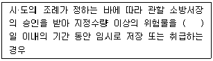
- 15
- 30
- 60
- 90
(정답률: 70%)
50. 다음 중 화재원인조사의 종류에 해당하지 않는 것은?
- 발화원인 조사
- 피난상황 조사
- 인명피해 조사
- 연소상황 조사
(정답률: 73%)
51. 제조소등의 위치·구조 또는 설비의 변경 없이 당해 제조소 등에서 저장하거나 취급하는 위험물의 품명·수량 또는 지정수량의 배수를 변경하고자 할때는 누구에게 신고해야 하는가?
- 국무총리
- 시·도지사
- 관할소방서장
- 행정안전부장관
(정답률: 74%)
52. 소방본부장 또는 소방서장은 화재경계지구 안의 관계인에 대하여 소방상 필요한 훈련 및 교육은 연 몇 회 이상 실시 할 수 있는가?
- 1
- 2
- 3
- 4
(정답률: 74%)
53. 소방기본법령상 국고보조 대상사업의 범위 중 소방활동장비와 설비에 해당하지 않는 것은?
- 소방자동차
- 소방헬리콥터 및 소방정
- 소화용수설비 및 피난구조설비
- 방화복 등 소방활동에 필요한 소방장비
(정답률: 74%)
54. 화재경계지구로 지정할 수 있는 대상이 아닌 것은?
- 시장지역
- 소방출동로가 있는 지역
- 공장·창고가 밀집한 지역
- 목조건물이 밀집한 지역
(정답률: 83%)
55. 위험물안전관리법령상 제조소등의 관계인은 위험물의 안전관리에 관한 직무를 수행하게 하기 위하여 제조소등마다 위험물의 취급에 관한 자격이 있는 자를 위험물안전관리자로 선임하여야 한다. 이 경우 제조소등의 관계인이 지켜야 할 기준으로 틀린 것은?
- 제조소등의 관계인은 안전관리자를 해임하거나 안전관리자가 퇴직한 때에는 해임하거나 퇴직한 날로부터 15일 이내에 다시 안전관리자를 선임하여야 한다.
- 제조소등의 관계인이 안전관리자를 선임한 경우에는 선임한 날로부터 14일 이내에 소방본부장 또는 소방서장에게 신고하여야 한다.
- 제조소등의 관계인은 안전관리자가 여행·질병 그 밖의 사유로 인하여 일시적으로 직무를 수행할 수 없는 경우에는 국가기술자격법에 따른 위험물의 취급에 관한 자격취득자 또는 위험물안전에 관한 기본지식과 경험이 있는 자를 대리자로 지정하여 그 직무를 대행하게 하여야 한다. 이 경우 대행하는 기간은 30일을 초과할 수 없다.
- 안전관리자는 위험물을 취급하는 작업을 하는 때에는 작업자에게 안전관리에 관한 필요한 지시를 하는 등 위험물의 취급에 관한 안전관리와 감독을 하여야 하고, 제조소등의 관계인은 안전관리자의 위험물 안전관리에 관한 의견을 존중하고 그 권고에 따라야 한다.
(정답률: 77%)
56. 다음 중 상주 공사감리를 하여야 할 대상의 기준으로 옳은 것은?
- 지하층을 포함한 층수가 16층 이상으로서 300세대 이상인 아파트에 대한 소방시설의 공사
- 지하층을 포함한 층수가 16층 이상으로서 500세대 이상인 아파트에 대한 소방시설의 공사
- 지하층을 포함하지 않은 층수가 16층 이상으로서 300세대 이상인 아파트에 대한 소바시설의 공사
- 지하층을 포함하지 않은 층수가 16층 이상으로서 500세대 이상인 아파트에 대한 소방시설의 공사
(정답률: 51%)
57. 다음 중 한국소방안전원의 업무에 해당하지 않는 것은?
- 소방용 기계·기구의 형식승인
- 소방업무에 관하여 행정기관이 위탁하는 업무
- 화재 예방과 안전관리의식 고취를 위한 대국민 홍보
- 소방기술과 안전관리에 관한 교육, 조사·연구 및 각종 간행물 발간
(정답률: 74%)
58. 다음 조건을 참고하여 숙박시설이 있는 특정소방대상물의 수용인원 산정 수로 옳은 것은?
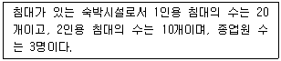
- 33명
- 40명
- 43명
- 46명
(정답률: 82%)
59. 소방안전관리자 및 소방안전관리보조자에 대한 실무교육이 교육대상, 교육일정 등 실무교육에 필요한 계획을 수립하여 매년 누구의 승인을 얻어 교육을 실시하는가?
- 한국소방안전원장
- 소방본부장
- 소방청장
- 시·도지사
(정답률: 60%)
60. 화재예방, 소방시설 설치·유지 및 안전관리에 관한 법령상 소방대상물의 개수·이전·제거, 사용의 금지 또는 제한, 사용폐쇄, 공사의 정지 또는 중지, 그 밖의 필요한 조치로 인하여 손신을 받은 자가 손실보상청구서에 첨부하여야 하는 서류로 틀린 것은?
- 손실보상합의서
- 손실을 증명할 수 있는 사진
- 손실을 증명할 수 있는 증빙자료
- 소방대상물의 관계인임을 증명할 수 있는 서류(건축물대장은 제외)
(정답률: 73%)
4과목: 소방전기시설의 구조 및 원리
61. 비상방송설비의 화재안전기준(NFSC 202)에 따라 다음 ( )의 ㉠, ㉡에 들어갈 내용으로 옳은 것은?
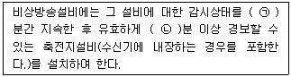
- ㉠ 30, ㉡ 5
- ㉠ 30, ㉡ 10
- ㉠ 60, ㉡ 5
- ㉠ 60, ㉡ 10
(정답률: 81%)
62. 무선통신보조설비의 화재안전기준(NFSC 5⑤)에 따라 무선통신보조설비의 누설동축케이블의 설치기준으로 틀린 것은?
- 누설동축케이블은 불연 또는 난연성으로 할것
- 누설동축케이블의 중간 부분에는 무반사 종단저항을 견고하게 설치할 것
- 누설동축케이블 및 안테나는 고압의 전로로부터 1.5m 이상 떨어진 위치에 설치할 것
- 누설동축케이블과 이에 접속하는 안테나 또는 동축케이블과 이에 접속하는 안테나로 구성할 것
(정답률: 67%)
63. 자동화재탐지설비 및 시각경보장치의 화재안전기준(NFSC 203)에 따른 자동화재탐지 설비의 수신기 설치기준에 관한 사항 중, 최소 몇 층 이상의 특정소방대상물에는 발신기와 전화통화가 가능한 수신기를 설치하여야 하는가?
- 3
- 4
- 5
- 7
(정답률: 74%)
64. 무선통신보조설비의 화재안전기준(NFSC 5⑤)에 따라 지하층으로서 특성소방대상물의 바닥부분 2면 이상이 지표면과 동일하거나 지표면으로부터의 깊이가 몇 m 이하인 경우에는 해당 층에 한하여 무선통신보조설비를 설치하지 않을 수 있는가?
- 0.5
- 1.0
- 1.5
- 2.0
(정답률: 74%)
65. 자동화재탐지설비 및 시각 경보장치의 화재안전기준(NFSC 203)에 따른 경계구역에 관한 기준이다. 다음 ( )에 들어갈 내용으로 옳은 것은?
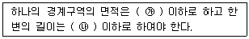
- ㉮ 600m2, ㉯ 50m
- ㉮ 600m2, ㉯ 100m
- ㉮ 1200m2, ㉯ 50m
- ㉮ 1200m2, ㉯ 100m
(정답률: 74%)
66. 누전경보기의 형식승인 및 제품검사의 기술기준에 따라 누전경보기의 경보기구에 내장하는 음향장치는 사용전압의 몇 %인 전압에서 소리를 내어야 하는가?
- 40
- 60
- 80
- 100
(정답률: 81%)
67. 누전경보기의 화재안전기준(NFSC 2⑤)의 용어 정의에 따라 변류기로부터 검출된 신호를 수신하여 누전의 발생을 해당 특정소방대상물의 관계인에게 경보하여 주는 것은?
- 축전지
- 수신부
- 경보기
- 음향장치
(정답률: 61%)
68. 자동화재속보설비의 속보기의 성능인증 및 제품검사의 기술기준에 따라 자동화재속보설비의 속보기의 외함에 합성수지를 사용할 경우 외함의 최소 두께(mm)는?
- 1.2
- 3
- 6.4
- 7
(정답률: 64%)
69. 유도등 및 유도표지의 화재안전기준(NFSC 303)에 따라 운동시설에 설치하지 아니할 수 있는 유도등은?
- 통로유도등
- 객석유도등
- 대형피난구유도등
- 중형피난구유도등
(정답률: 64%)
70. 유도등 및 유도표지의 화재안전기준(NFSC 303)에 따른 통로유도등의 설치기준에 대한 설명으로 틀린 것은?
- 복도·거실통로유오등은 구부러진 모퉁이 및 보행거리 20m마다 설치
- 복도·계딴통로유도등은 바닥으로부터 높이 1m 이하의 위치에 설치
- 통로유도등은 녹색바탕에 백색으로 피난방향을 표시한 등으로 할 것
- 거실통로유도등은 바닥으로부터 높이 1.5m 이상의 위치에 설치
(정답률: 60%)
71. 비상방송설비의 화재안전기준(NFSC 202)에 따라 비상방송설비 음향장치의 정격전압이 220V인 경우 최소 몇 V 이상에서 음향을 발할 수 있어야 하는가?
- 165
- 176
- 187
- 198
(정답률: 71%)
72. 유도등 및 유도표지의 화재안전기준(NFSC 303)에 따라 광원점등방식 피난유도선의 설치기준으로 틀린 것은?
- 구획된 각 실로부터 주출입구 또는 비상구까지 설치할 것
- 피난유도 표시부는 바닥으로부터 높이 1m 이하의 위치 또는 바닥 면에 설치할 것
- 피난유도 제어부는 조작 및 관리가 용이도록 바닥으로부터 0.8m이상 1.5m 이하의 높이에 설치할 것
- 피난유도 표시부는 50cm 이내의 간격으로 연속되도록 설치하되 실내장식물 등으로 설치가 곤란할 경우 2m 이내로 설치할 것
(정답률: 67%)
73. 비상콘센트설비의 화재안전기준(NFSC 504)에 따른 용어의 정의 중 옳은 것은?
- “저압”이란 직류는 750V 이하, 교류는 600V 이하인 것을 말한다.
- “저압”이란 직류는 700V 이하, 교류는 600V 이하인 것을 말한다.
- “고압”이란 직류는 700V를, 교류는 600V 초과하는 것을 말한다.
- “고압”이란 직류는 750V를, 교류는 600V 초과하는 것을 말한다.
(정답률: 78%)
74. 예비전원의 성능인증 및 제품검사의 기술기준에 따라 다음의 ( )에 들어갈 내요으로 옳은 것은?
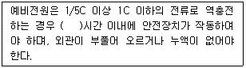
- 1
- 3
- 5
- 10
(정답률: 55%)
75. 차동식분포형감지기의 동작방식이 아닌 것은?
- 공기관식
- 열전대식
- 열반도체식
- 불꽃 자외선식
(정답률: 55%)
76. 자동화재탐지설비 및 시각경보장치의 화재안전기준(NFSC 203)에 따른 감지기의 설치기준으로 틀린 것은?
- 스포트형감지기는 45° 이상 경사되지 아니하도록 부착할 것
- 감지기(차동분포형의 것을 제외한다.)는 실내로의 공기유입구로부터 1.5m 이상 떨어진 위치에 설치할 것
- 보상식스포트형 감지기는 정온점이 감지기 주위의 평상시 최고온도보다 10°C 이상 높은 것으로 설치할 것
- 정온식감지기는 주방·보일러실 등으로서 다량의 화기를 취급하는 장소에 설치하되 공칭작동온도가 최고주의온도보다 20°C 이상 높은 것으로 설치할 것
(정답률: 72%)
77. 비상경보설비 및 단독경보형감지기의 화재안전기준(NFSC 201)에 따라 비상벨설비 또는 자동식사이렌설비의 지구음향장치는 특정소방대상물의 층마다 설치하되, 해당 특정소방대상물의 각 부분으로부터 하나의 음향장치까지의 수평거리가 몇 m 이하가 되도록 하여야 하는가?
- 15
- 25
- 40
- 50
(정답률: 74%)
78. 비상콘센트설비의 화재안전기준(NFSC 504)에 따라 비상콘셉트설비의 전원회로(비상콘세트에 전력을 공급하는 회로를 말한다.)에 대한 전압과 공급용량으로 옳은 것은?
- 전압 : 단상교류 110V, 공급용량 : 1.5kVA 이상
- 전압 : 단상교류 220V, 공급용량 : 1.5kVA 이상
- 전압 : 단상교류 110V, 공급용량 : 3kVA 이상
- 전압 : 단상교류 220V, 공급용량 : 3kVA 이상
(정답률: 78%)
79. 소방시설용 비상전원수전설비의 화재안전기준(NFSC 602)에 따라 일반전기사업자로부터 특고압 또는 고압으로 수전하는 비상전원 수전설비의 경우에 있어 소방회로배선과 일반회로배선을 몇 cm이상 떨어져 설치하는 경우 불연성 벽으로 구획하지 않을 수 있는가?
- 5
- 10
- 15
- 20
(정답률: 55%)
80. 비상조명등의 화재안저기준(NFSC 304)에 따라 비상조명등의 비상전원을 설치하는데 있어서 어떤 특정소방대상물의 경우에는 그 부분에서 피난층에 이르는 부분의 비상조명등을 60분 이상 유효하게 작동시킬 수 있는 용량으로 하여야 한다. 이 특정소방물에 해당하지 않는 것은?
- 무창층인 지하역사
- 무창층인 소매시장
- 지하층인 관람시설
- 지하층을 제외한 층수가 11층 이상의 층
(정답률: 49%)
㉠는 송신지 IP 주소와 포트 번호, ㉡는 수신지 IP 주소와 포트 번호를 나타냅니다. 이 때, ㉠의 값이 작을수록 보안이 강화되며, ㉡의 값이 클수록 보안이 강화됩니다.
따라서, ㉠가 0.5이고 ㉡가 2.5인 것은 송신지 IP 주소와 포트 번호를 상대적으로 더 엄격하게 필터링하고, 수신지 IP 주소와 포트 번호는 상대적으로 덜 엄격하게 필터링하기 때문입니다. 이는 보안을 유지하면서도 네트워크 성능을 유지하기 위한 조절입니다.
따라서, 정답은 "㉠ 0.5, ㉡ 2.5"입니다.